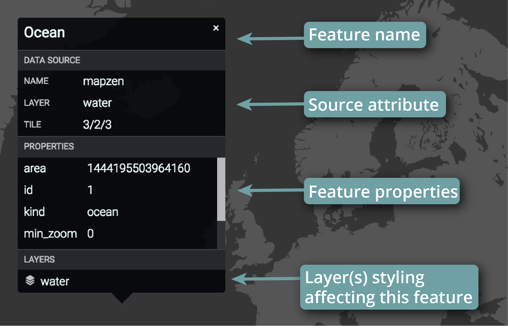

Tangram Play is an interactive text editor for creating maps using Mapzen’s Tangram rendering engine. With Play, you can write and edit map styles and preview the changes live in the web browser. This walkthrough showcases the main interface components and explains how to get started in Play.
Tangram Play has two main interface components: the map preview and the editing pane. The map preview will show any changes made by writing in the editing pane on the fly. You can use the map toolbar to change the zoom level, search for a location to move the map, save a particular location, or take a screenshot of the map. The editing pane can be moved to the left or right by hovering on the bar dividing the map and editing pane and dragging with your mouse. The editing pane is where code is written in Tangram's syntax to control the map design. It has common features of a text editor, such as keyboard shortcuts (described below), collapsible sections, and line numbering.
Create a free Mapzen account to save and share your map styles. Great map styles are not built in a day, so you can open your saved style from your account and pick up where you left off! You can continue saving changes to your current style using 'Save > Save to Mapzen account' or create a copy using 'Save > Save as…'. Tangram Play currently allows two ways to share your map styles. 'Share > Get shareable link to your map…' lets you preview your map style and share it with others. 'Share > Get code snippet' generates JavaScript code that can be used with Tangram.
Read more about creating a Mapzen account »
You can inspect your data source in Mapzen by selecting the inspect tool on the main toolbar. When the inspect tool is selected, you can click on any map feature to find out the data source, its properties and the layers that are actively styling the feature.
